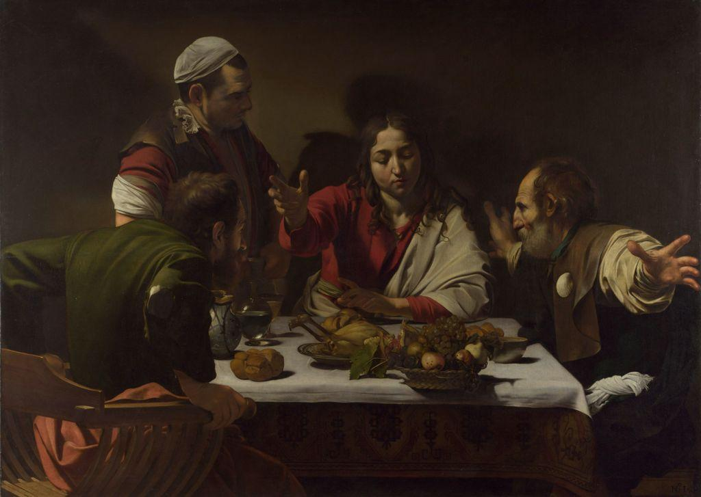

How can a single shaft of light turn a painting into a stage, and point straight at the one figure who matters?
Around the year 1600 a new style swept across Europe. The calm balance of the Renaissance gave way to drama: deep shadow, sudden light, bodies caught mid-motion, raw human feeling. We call it the Baroque. No one used light more boldly than Caravaggio, who painted ordinary-looking people lit as if a spotlight had found them in the dark.
🎯 BY THE END OF THIS LESSON YOU WILL BE ABLE TO…
1
I will be able to describe the Baroque as a style of drama, movement, and intense emotion, roughly 1600 to 1750.
2
I will be able to define chiaroscuro and tenebrism and explain how Caravaggio used light to carry meaning.
3
I will be able to prepare for my Baroque analysis and my own Chiaroscuro challenge.
📋 WHAT YOU NEED FOR THIS LESSON
▶
A notebook or an open Word document; this lesson sets up your Baroque Analysis and Chiaroscuro Challenge
▶
The calm, balanced Renaissance works of Units 7 (Leonardo, Raphael) for comparison
📚 PART 1 · LOOK FIRST~12 MIN
👀 LOOK CLOSELY · FIND THE LIGHT
Before you read on, look at the painting below. Most of it is in darkness. Where does the light come from, and where does it land? Follow it. Notice whose face and whose hand it touches, and whom it leaves in shadow. The light is doing more than helping you see; it is telling you where to look.
The Calling of Saint Matthew, Caravaggio, 1599–1600, oil on canvas. Contarelli Chapel, San Luigi dei Francesi, Rome. Public domain.
A group of men in fashionable clothes sit counting coins at a table in a dim room. From the right, a beam of light cuts across the wall and strikes the group. A figure at the door (Christ) lifts a hand and points. One of the seated men points back at himself, as if to ask, “Me?” That man is Matthew the tax collector, and this is the instant his life turns. The light arrives with the call.
This is the Baroque (roughly 1600 to 1750): an art of drama, movement, and intense emotion, made to grip you and pull you in. Where Renaissance art prized calm, balance, and ideal beauty, the Baroque reaches for the charged moment, the catch of breath, the feeling that something is happening right now.
📚 PART 2 · LIGHT THAT MEANS SOMETHING~16 MIN
Caravaggio's main tool is the contrast between light and dark, called chiaroscuro (from the Italian chiaro, “light,” and scuro, “dark”). He pushes it to an extreme: most of the canvas is near-black, and a single hard shaft of light picks out only what matters. That extreme version, deep shadow pierced by a beam, is called tenebrism (from the Latin tenebrae, “darkness”). The light enters on a strong diagonal, which sets the scene in motion and leads your eye across the figures rather than letting it rest.
In tenebrism the room is nearly black; one diagonal shaft selects a single figure. The light is not just illumination, it is the point.
✏️ PAUSE AND REFLECT · YOUR NOTES STAY HERE
Look again at The Calling of Saint Matthew. In one or two sentences, what do you think Caravaggio is saying by making the same light that fills the room also fall on Matthew at the exact moment he is called?
Caravaggio also broke with the polished, idealized bodies of the Renaissance. His figures show naturalism: they look like real, ordinary people, with weathered faces, dirty feet, and everyday clothes. He reportedly used working people from the streets of Rome as his models. To some viewers this felt shockingly common for a sacred subject. To Caravaggio it made the holy story feel like it could happen to anyone, in any dim room.
📚 PART 3 · WATCH IT WORK~16 MIN
A second Caravaggio shows the same tools in a quieter, more startling scene. In The Supper at Emmaus, two travelers share a meal with a stranger and suddenly recognize him as the risen Christ. Caravaggio freezes the split second of shock: one man flings his arms wide, the other grips his chair to push back, and a basket of fruit teeters on the very edge of the table, about to fall into our space. The light bursts onto the figures from the upper left, and the gestures lunge out toward us.

The Supper at Emmaus, Caravaggio, 1601, oil and tempera on canvas. National Gallery, London. Public domain.
🔍 ARTWORK SPOTLIGHT
The Calling of Saint Matthew (1599–1600)
Caravaggio · Contarelli Chapel, Rome (Baroque)
Describe: In a dim room, several men in contemporary dress sit at a table counting coins. From the right, two figures stand; one points toward the table. A hard beam of light crosses the back wall and falls on the seated group. One seated man points at his own chest.
Analyze: Extreme chiaroscuro (tenebrism) buries most of the scene in shadow, while a single diagonal shaft of light directs the eye along the pointing hands to Matthew. The strong diagonal and outstretched arm create movement and tension across the dark space.
Interpret: One reading is that the light is the call itself. It enters with the gesture and lands on the one ordinary man being chosen, suggesting that a sacred summons can reach anyone, mid-task, without warning.
Judge: It succeeds powerfully. By staging a holy moment in a shadowy everyday room and letting light do the pointing, Caravaggio makes the instant feel urgent and personal, which is exactly what the Baroque set out to do.
✅ CHECK YOUR UNDERSTANDING
The extreme version of light-and-dark contrast that buries most of the scene in near-black and pierces it with a shaft of light is called…
Caravaggio's figures often look like ordinary working people with weathered faces and bare feet. This quality is called…
⚠️ WORTH KNOWING · AI & “DRAMATIC LIGHTING”
Image generators can apply “dramatic lighting” or a “chiaroscuro” filter in seconds, and the result can look striking. But for Caravaggio the lighting was an argument: the shaft that singles out Matthew tells you who is being called and when. AI can place light where the contrast looks best; it does not decide what the light should mean. When you set up your own Chiaroscuro Challenge, you choose what the light reveals, and that choice is the point.
📖 VOCABULARY FROM THIS LESSON
Baroque
The European style of about 1600 to 1750 marked by drama, movement, and intense emotion.
Chiaroscuro
The treatment of strong contrast between light and dark to model form (Italian for “light-dark”).
Tenebrism
Extreme chiaroscuro: near-black shadow pierced by a hard shaft of light, as in Caravaggio.
Naturalism
Depicting figures as real, ordinary-looking people rather than idealized ones.
Diagonal composition
A slanted arrangement of light, line, or figures that creates movement and tension.
✏️ NOW YOU TRY · IN YOUR NOTEBOOK
Plan your Chiaroscuro Challenge. Choose one object or one person you can light from a single source (a desk lamp, a phone flashlight, a window). Sketch or note where the light will fall and what it will leave in shadow. Then decide: what do you want the light to point to, and why? Write one sentence naming the “most important thing” your light will reveal. This becomes your Chiaroscuro Drawing or Photography Challenge.
➡️ WHAT YOU’LL DO NEXT
1
Lesson 8.02 and 8.03
Meet Bernini's sculpture in motion, then Versailles and the Rococo.
2
Baroque Analysis (assignment)
Write a full four-step analysis of The Calling of Saint Matthew.
3
Chiaroscuro Challenge (creation) and Unit 8 Quiz
Make your own light-and-dark study, then take the short auto-graded quiz.
💪 WHY THIS MATTERS
Caravaggio changed what a painting could do. By turning light into a spotlight and ordinary people into actors in a sacred drama, he made viewers feel they were present at the decisive moment. That control of light and emotion is the heart of the Baroque, and it still shapes how films, photographers, and stage designers point our attention today. Next, you will see Bernini do something just as bold in stone.
Optima Academy Online · ART HISTORY & CRITICISM · Semester 2 · Student Lesson Page